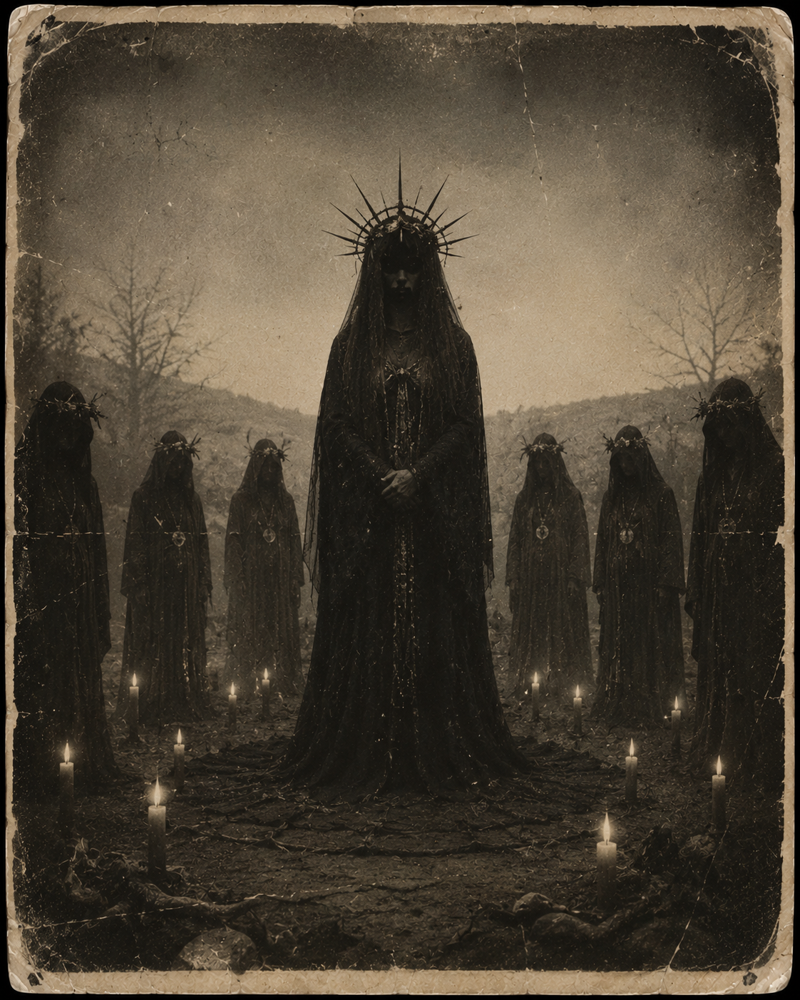

🕯️ Entity Image

Threat Level
High
Classification
Cult Influence Entity
FILE STATUS: RESTRICTED • CLEARANCE: PHANTOM LEVEL • ARCHIVE ACCESS LOGGED
Containment Status
Active Observation
📖 Description
The Cult Mother is not interested in destruction.
She is interested in devotion.
Wherever she appears, small groups begin to form around her influence. These groups often believe they are helping, protecting, or healing others, while unknowingly strengthening the entity itself.
⚙️ Known Behaviour
The Cult Mother rewards those who aid hostile entities and encourages behaviour that benefits the Phantom Realm's anomalies.
Researchers have documented a significant increase in healing activity and entity-supportive actions whenever her influence is detected.
Victims rarely realise they have been affected until after containment has failed.
⚠️ Containment Notes
- Do not accept gifts left in containment zones.
- Do not join gatherings held after midnight.
- If you begin referring to the entity as "Mother", report immediately.
- If you feel compelled to help hostile anomalies, containment has been compromised.
🔬 Research Findings
Unlike most entities, The Cult Mother rarely attacks directly.
Instead, she creates followers who willingly act on her behalf.
Several researchers have suggested that her greatest weapon is not power, but persuasion.
📜 Archive Connection
All recorded appearances, defeats, and containment events involving this entity are logged automatically through the Phantom Realm archive system.
Previous File Return to Archive Next File